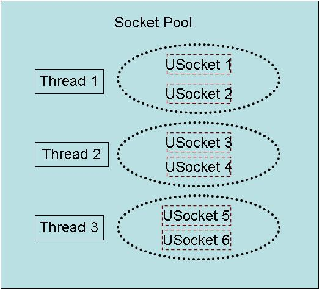
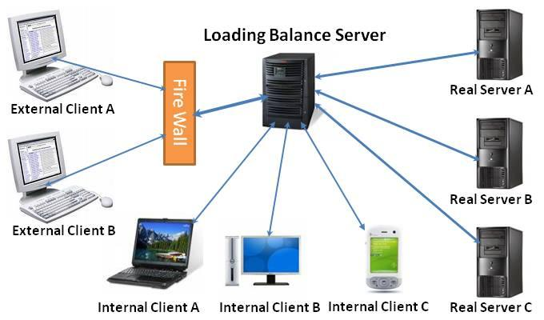
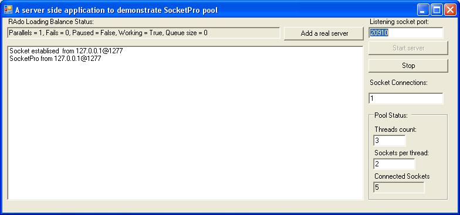
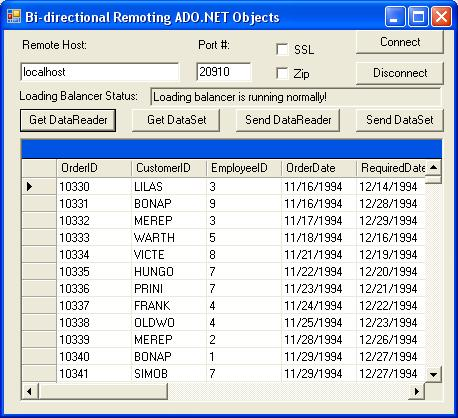

Tutorial Four
Contents
1. Introduction
The term scalability is very often misused. We define scalability as the following three aspects:
a. Scalability is the ability to fully utilize available processing power on a multiprocessor system (2, 4, 8, 32, or more processors).
b. Scalability is the ability to load balancing requests onto many real servers with disaster recovery.
c. Scalability is the ability to serve a large number of clients with sufficient performance.
d. Scalability is the ability to support a large variety of networks (phone line, cable/dsl, wireless modems as well as LAN) and machines (desktop pc, pocket pc and devices etc).
e. Scalability is the ability to support remote accessing from applications written from different development languages, which are running on different platforms.
If you have already studied the previous three tutorials, you should understand that SocketPro is excellent at the above aspects c and d. The tutorial shows you that SocketPro is able to support remote accessing from applications that are running on different platforms and written from different development languages through HTTP protocol. Therefore, SocketPro is also good at the aspect e. In this tutorial, we are going to show you how good SocketPro is for the first two aspects a and b. This tutorial is designed for you to take advantage of ATL COM object USocketPool by use of the class CPLGService inside SocketProAdapter.
2. Fundamentals about COM object USocketPool
Similar to a thread pool in many aspects, a socket pool contains a set of sockets concurrently running within a few of threads. All of sockets can be shared and reused by thousands of clients. Each of threads hosts a few of sockets. All of sockets, even within the same thread, run with very good concurrency. The following figure shows a socket pool having three threads, and each of them hosts two USocket objects.

There is one key point with the socket pool object. When a service handler is attached to a client socket, all of requests with the handler are sent from one thread other than one thread in the pool, but their return results are always processed in one of the pool threads, because all of USocket events happen within the pool hosting threads. Under most of cases, sending a request is a fast step, but processing its returning result is usually slow. With help of socket pool, all of returning results are always processed with pooled threads concurrently. This improves application scalability.
To maximize performance and scalability, we must host a socket pool within a COM MTA apartment (free threaded) to avoid data marshalling across threads if possible. It is the reason that socket pool prefers a MTA apartment. Additionally, a socket pool can contain 63*255 sockets at most, which is always far enough for all of applications.
3. Various samples for SocketPool usages
At this writing time, there are following three groups of sample projects available for demonstrating various usages of socket pool.
A. Samples for usages of CSocketPool are listed below.
· ..\udaparts\SocketPro\samples\RemoteDB\csharp\DBConsole for C#
· ..\udaparts\SocketPro\samples\RemoteDB\vbnet\DBConsole for VB.NET
· ..\udaparts\SocketPro\tutorial\CPlusPlus\SampleOne\Client for C++
· ..\udaparts\SocketPro\samples\AsynWeb\CSharp\AdoWebAsync for C#
· ..\udaparts\SocketPro\samples\AsynWeb\vbnet\AdoWebAsync for VB.NET
B. Samples for usages of CSocketPoolEx are listed below.
· ..\udaparts\SocketPro\samples\MyMPI\cplusplus\client\MPIOnClientSide for C++
· ..\udaparts\SocketPro\samples\MyMPI\csharp\client\MPIOnClientSide for C#
· ..\udaparts\SocketPro\samples\MyMPI\vbnet\client\MPIOnClientSide for VB.NET
· ..\udaparts\SocketPro\samples\HTTPLoadingBalanace\csharp for C#
· ..\udaparts\SocketPro\samples\HTTPLoadingBalanace\vbnet for VB.NET
C. Samples for usages of CPLGService are listed below.
· ..\udaparts\SocketPro\samples\MyMPI\cplusplus\loadingBalanceServer for C++
· ..\udaparts\SocketPro\samples\MyMPI\csharp\loadingBalanceServer for C#
· ..\udaparts\SocketPro\samples\MyMPI\vbnet\loadingBalanceServer for VB.NET
· ..\udaparts\SocketPro\tutorial\CSharp\SampleFour\Server for C#
· ..\udaparts\SocketPro\tutorial\cplusplus\SampleFour\Server for C++
·
..\udaparts\SocketPro\tutorial\vbnet\SampleFour\Server
for VB.NET
This tutorial is focused on the
last three sample projects of the last group C using CPLGService on a central
loading balance server.
The following picture shows the architecture of a typical central SocketPro loading balance system. The system consists of a center loading balance server that is connected with an array of real servers. These real servers are redundant middle tiers to access one or many replicate database backend servers. The loading balance server is accessed from many either external or internal clients. As you can see, the system may supports tens or even hundreds of thousands client connections for acceptable performance. The key part in the system is the central landing balance server written from SocketPro socket pool.

To simplify the sample, we reuse RAdo sample project as our real server
running on the port 20901 of machines. See the short article
here. It is located at the directory of C:\Program Files\UDAParts\SocketPro\samples\Rado\csharp(vbnet)\server
by default. Its client is slightly modified for sending a dataset or records
through IDataReader interface from a client to a real server through the
central landing balance server.
The central loading balance server running on the port 20910 is capable
to notify clients a proper message if there is a failure, all of real servers
are down, or there are too many queued jobs in waiting list. Besides, the
balancer is able to add a new real server if necessary, as shown in the below
picture.

As described with this short article, we must call SendDataReader and
SendDataSet between StartJob and EndJob, because calling them internally leads
to calling SendRequest many times and all of callings must belong to one job as
shown in the below.
m_ClientSocket.StartJob();
bool ok = m_RAdo.SendDataReader(dr);
m_ClientSocket.EndJob();
……
m_ClientSocket.StartJob();
bool ok =
m_RAdo.SendDataSet(ds);
m_ClientSocket.EndJob();
To enable
a client monitoring various message, we need to trace various message from the
central balance server using the below code snippet.
private void
OnBaseRequestCome(short sRequestId)
{
switch(sRequestId)
{
case (short)USOCKETLib.tagChatRequestID.idSendUserMessage:
case
(short)USOCKETLib.tagChatRequestID.idSpeak:
case (short)USOCKETLib.tagChatRequestID.idXSpeak:
{
object obj = m_ClientSocket.GetUSocket().Message;
switch ((int)obj)
{
case Failover:
txtLBStatus.Text
= "There is a failover!";
break;
case ExceedingMaxJobQueueSize:
txtLBStatus.Text
= "Loading balancer job queue full!";
break;
case NoRealServerAvailable:
m_ClientSocket.Disconnect();
txtLBStatus.Text
= "No real server available!";
break;
default:
txtLBStatus.Text
= "Loading balancer is running normally!";
break;
}
}
break;
default:
break;
}
}
The above two snippets are the
only modifications required in comparison to the original sample client code at
the directory of C:\Program
Files\UDAParts\SocketPro\samples\RAdo\Csharp(vbnet)\Client.
When
executing the client application, you will get the following picture.

The generics (or template for C++)
class CPLGService, which is derived from CBaseService, contains a dynamic
loading balancer, an instance of CSocketPoolEx. It supports routing all of client
jobs having one or more requests onto a real server through the balancer. An
instance of CClientPeer corresponds to an identity for the balancer.
As described at this short article, we override four virtual
functions, void OnAllSocketsDisconnected(), bool OnFailover(CRequestAsynHandlerBase Handler, IJobContext JobContext), void
OnJobDone(CRequestAsynHandlerBase Handler, IJobContext JobContext) and bool OnExecutingJob(CRequestAsynHandlerBase
Handler, IJobContext JobContext). The
central balancer will notify client messages inside these virtual functions,
whenever there is a failure, all
of real servers are down, or there are too many queued jobs in waiting list.
The code snippets are simple as long as you went through the tutorial two.
protected override void OnAllSocketsDisconnected()
{
//just get any one of peer sockets
int nTotalClients = CSocketProServer.CountOfClients;
while (nTotalClients > 0)
{
nTotalClients--;
int
hSocket = CSocketProServer.GetClient(nTotalClients);
CClientPeer
p = SeekClientPeer(hSocket);
if (p
!= null)
{
int[]
groups = { 1 };
p.Push.Broadcast(CMyPLGService.NoRealServerAvailable,
groups);
break;
}
}
m_frmSocketPool.BeginInvoke(m_frmSocketPool.m_OnUpdateLBStatus);
}
protected override bool OnFailover(CRequestAsynHandlerBase
Handler, IJobContext JobContext)
{
CClientPeer peer = (CClientPeer)JobContext.Identity;
//send own a fail message
peer.Push.SendUserMessage(CMyPLGService.Failover, peer.UserID);
m_frmSocketPool.BeginInvoke(m_frmSocketPool.m_OnUpdateLBStatus);
return true; //true, make disaster recovery; false, no disaster recovery
}
protected override void OnJobDone(CRequestAsynHandlerBase
Handler, IJobContext JobContext)
{
if (JobContext.JobManager.CountOfJobs < (CMyPLGService.MAX_JOB_QUEUE_SIZE -1))
{
CClientPeer
peer = (CClientPeer)JobContext.Identity;
int[]
groups ={ 1 };
peer.Push.Broadcast(CMyPLGService.JobQueueNormal,
groups);
}
m_frmSocketPool.BeginInvoke(m_frmSocketPool.m_OnUpdateLBStatus);
}
protected override bool OnExecutingJob(CRequestAsynHandlerBase
Handler, IJobContext JobContext)
{
if (JobContext.JobManager.CountOfJobs >= CMyPLGService.MAX_JOB_QUEUE_SIZE)
{
CClientPeer
peer = (CClientPeer)JobContext.Identity;
int[]
groups ={ 1 };
peer.Push.Broadcast(CMyPLGService.ExceedingMaxJobQueueSize,
groups);
}
m_frmSocketPool.BeginInvoke(m_frmSocketPool.m_OnUpdateLBStatus);
return true;
}
In addition, TClientPeer must derive from the base class CClientPeer with
implementation of the interface IPeerJobContext as described at this short
article. In this tutorial, you can just use Visual studio to do it for you by
right clicking the interface. We must also implement the two required
functions, void OnFastRequestArrive(short
sRequestID, int nLen) and int OnSlowRequestArrive(short
sRequestID, int nLen) without typing in any
code. All of these required functions are easy to be implemented, as shown in
the attached sample project.
At last, we need to notify clients a proper message when they initially
enter the chat group. To do so, we need to override the function void OnChatRequestComing(short sRequestID, int nLen) as shown in the below code snippet.
protected override void OnChatRequestComing(tagChatRequestID
ChatRequestId, object Param0, object Param1)
{
switch (ChatRequestId)
{
case tagChatRequestID.idEnter:
case tagChatRequestID.idXEnter:
{
long lConnected = m_JobManager.SocketPool.ConnectedSocketsEx;
string strUserId = UserID;
if (lConnected == 0)
Push.SendUserMessage(CMyPLGService.NoRealServerAvailable,
strUserId);
else if (m_JobManager.CountOfJobs >= CMyPLGService.MAX_JOB_QUEUE_SIZE)
Push.SendUserMessage(CMyPLGService.ExceedingMaxJobQueueSize,
strUserId);
else
Push.SendUserMessage(CMyPLGService.JobQueueNormal,
strUserId);
}
break;
default:
break;
}
}
However, the function will not be called because it is not
one of supported callbacks by default. To enable it, we must use the below code
from the function CPoolSvr::RunOnThread.
//set
for global callbacks for the events OnAccept, OnClose, and OnIsPermitted
AskForEvents((int)tagEvent.eOnAccept + (int)tagEvent.eOnClose + (int)tagEvent.eOnIsPermitted + (int)tagEvent.eOnChatRequestComing);
By this time, the CPLGService will function as expected. To simplify
the tutorial, we stop here.
Actually, you can implement many more features based on this tutorial. Here is a list of important examples.
· Drop or modify a job inside the function void OnExecutingDone(CRequestAsynHandlerBase Handler, IJobContext JobContext). When the virtual function returns false, the job JobContext will be removed. Additionally, you can also add or remove some requests (tasks) through the interface IJobContext. Alternatively, you can do so inside the function void IPeerJobContext.OnTaskJustAdded(IJobContext JobContext, int nTaskId, short sRequestId), void IPeerJobContext.OnEnqueuingJob(IJobContext JobContext, short sRequestId), void IPeerJobContext.OnJobEnqueued(IJobContext JobContext, short sRequestId), or void IPeerJobContext.OnWaitable(IJobContext JobContext, int nTaskId, short sRequestId).
· Barrier for one or more jobs until finished by calling the method IJobContext.Wait or JobManager.Wait inside the function void IPeerJobContext.OnWaitable(IJobContext JobContext, int nTaskId, short sRequestId). You can even barrier until all of jobs are completed by method JobManager.WaitAll.
· In case you want to stop routing returning results from a real server onto a client, you can return false from the virtual function bool IPeerJobContext.OnSendingPeerData(IJobContext JobContext, short sRequestId, CUQueue UQueue). You can also modify returning result by changing data inside UQueue.
· In case you like to change requests before routing to a real server, you can do it by modifying data in m_UQueue from the function either void OnFastRequestArrive(short sRequestID, int nLen) or int OnSlowRequestArrive(short sRequestID, int nLen).
Again, this is not a final list. Actually, you can do many more.
9.FAQs
a. Can I create multiple instances of
CPLGSservice within one application because I want to balance all of my services
like this tutorial, and each of them uses its own balancer?
Absolutely yes!
b. Can I use one balancer to handle all of
different services?
No! By design, each of services requires an instance of CPLGService. A client can call the method SwitchTo for different services separately, but is not able to call multiple requests from different services in one shot.